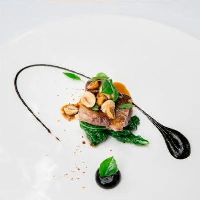

01Papas nativas
Tres variedades de Boyacá, ají de uchuva y suero costeño.
Ingredientes de pequeños productores, cocinados al fuego lento de la leña y servidos sin prisa.
Cada temporada visitamos a las familias que cultivan lo que servimos. El menú nace de esas visitas: papas nativas de Boyacá, cacao de Tumaco, pescado del Pacífico.
El resultado es una mesa pequeña, de 24 puestos, donde cada plato tiene una historia.